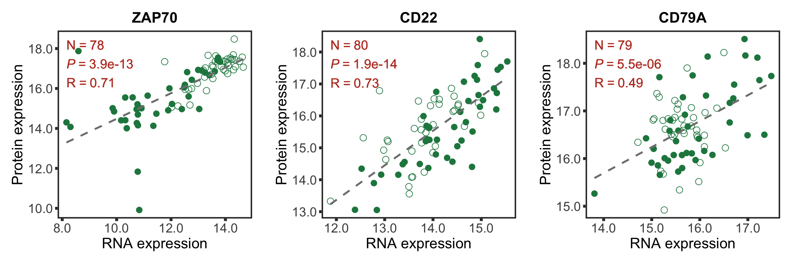
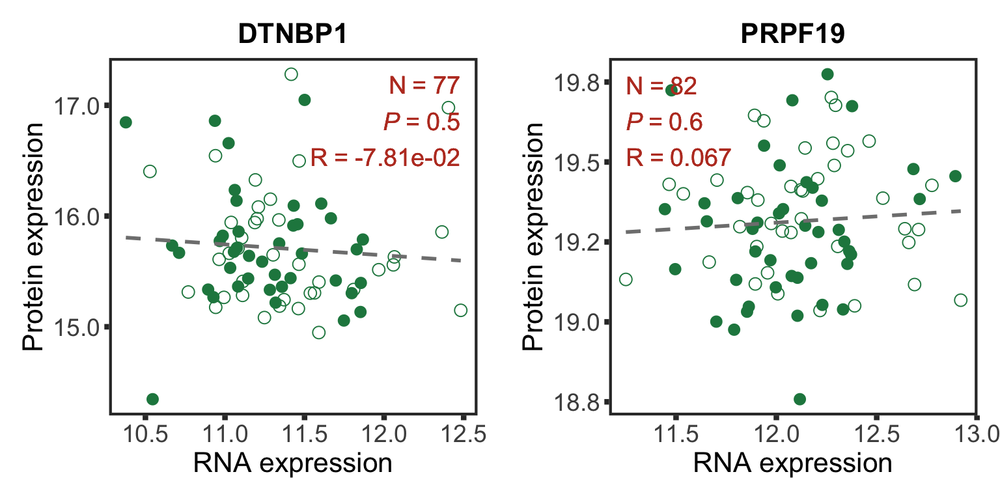
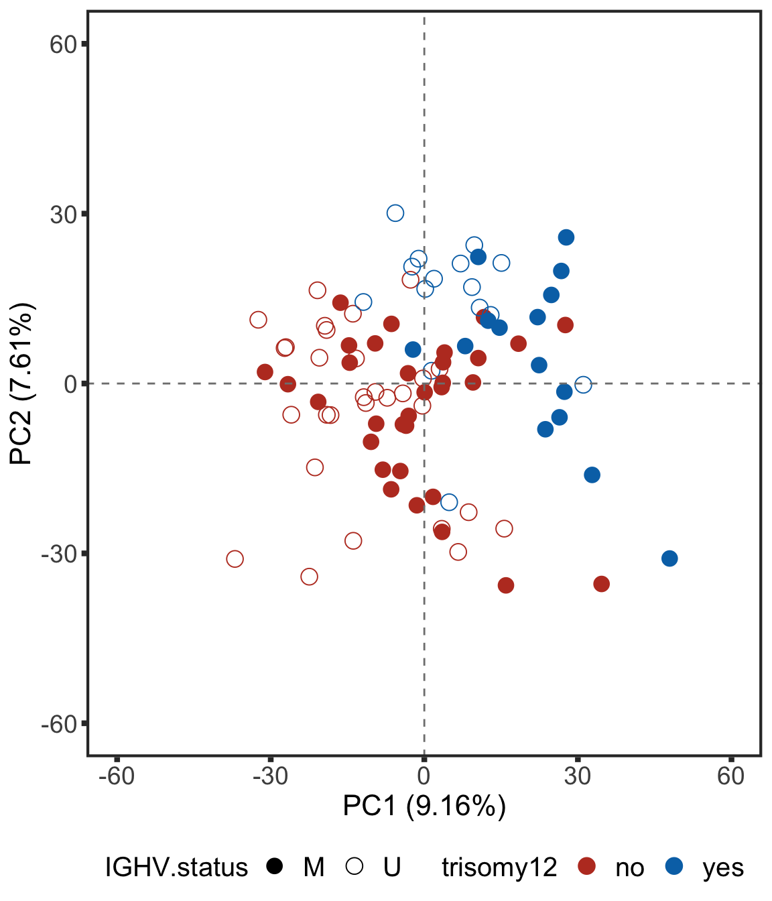

Section 1: Overview of CLL proteomic dataset
Junyan Lu
2020-10-09
Last updated: 2021-03-15
Checks: 6 1
Knit directory: CLLproteomics_publish/analysis/
This reproducible R Markdown analysis was created with workflowr (version 1.6.2). The Checks tab describes the reproducibility checks that were applied when the results were created. The Past versions tab lists the development history.
The R Markdown is untracked by Git. To know which version of the R Markdown file created these results, you’ll want to first commit it to the Git repo. If you’re still working on the analysis, you can ignore this warning. When you’re finished, you can run wflow_publish to commit the R Markdown file and build the HTML.
Great job! The global environment was empty. Objects defined in the global environment can affect the analysis in your R Markdown file in unknown ways. For reproduciblity it’s best to always run the code in an empty environment.
The command set.seed(20200227) was run prior to running the code in the R Markdown file. Setting a seed ensures that any results that rely on randomness, e.g. subsampling or permutations, are reproducible.
Great job! Recording the operating system, R version, and package versions is critical for reproducibility.
Nice! There were no cached chunks for this analysis, so you can be confident that you successfully produced the results during this run.
Great job! Using relative paths to the files within your workflowr project makes it easier to run your code on other machines.
Great! You are using Git for version control. Tracking code development and connecting the code version to the results is critical for reproducibility.
The results in this page were generated with repository version 3fb50c5. See the Past versions tab to see a history of the changes made to the R Markdown and HTML files.
Note that you need to be careful to ensure that all relevant files for the analysis have been committed to Git prior to generating the results (you can use wflow_publish or wflow_git_commit). workflowr only checks the R Markdown file, but you know if there are other scripts or data files that it depends on. Below is the status of the Git repository when the results were generated:
Ignored files:
Ignored: .DS_Store
Ignored: .Rhistory
Ignored: .Rproj.user/
Ignored: analysis/.DS_Store
Ignored: analysis/.Rhistory
Ignored: code/.DS_Store
Ignored: code/.Rhistory
Ignored: data/.DS_Store
Ignored: output/.DS_Store
Untracked files:
Untracked: analysis/.trisomy12_norm.pdf
Untracked: analysis/manuscript_S1_Overview.Rmd
Untracked: analysis/manuscript_S2_genomicAssociation.Rmd
Untracked: analysis/manuscript_S3_trisomy12.Rmd
Untracked: analysis/manuscript_S4_trisomy19.Rmd
Untracked: analysis/manuscript_S5_IGHV.Rmd
Untracked: analysis/manuscript_S6_del11q.Rmd
Untracked: analysis/manuscript_S7_SF3B1.Rmd
Untracked: analysis/manuscript_S8_drugResponse_Outcomes.Rmd
Untracked: analysis/manuscript_S9_STAT2.Rmd
Untracked: analysis/test.pdf
Untracked: code/utils.R
Untracked: data/Fig1A.png
Untracked: data/ddsrna_enc.RData
Untracked: data/exprCNV_enc.RData
Untracked: data/gmts/
Untracked: data/patMeta_enc.RData
Untracked: data/pepCLL_lumos_enc.RData
Untracked: data/pheno1000_enc.RData
Untracked: data/proteins_in_complexes
Untracked: data/proteomic_LUMOS_enc.RData
Untracked: data/proteomic_timsTOF_enc.RData
Untracked: data/survival_enc.RData
Untracked: output/MSH6_splicing.svg
Untracked: output/SUGP1_splicing.svg
Untracked: output/deResList.RData
Untracked: output/deResList_timsTOF.RData
Untracked: output/dxdCLL.RData
Untracked: output/dxdCLL2.RData
Unstaged changes:
Modified: analysis/_site.yml
Deleted: analysis/analysisSF3B1.Rmd
Deleted: analysis/comparePlatforms.Rmd
Deleted: analysis/compareProteomicsRNAseq.Rmd
Deleted: analysis/correlateCLLPD.Rmd
Deleted: analysis/correlateGenomic.Rmd
Deleted: analysis/correlateGenomic_removePC.Rmd
Deleted: analysis/correlateMIR.Rmd
Deleted: analysis/correlateMethylationCluster.Rmd
Modified: analysis/index.Rmd
Deleted: analysis/predictOutcome.Rmd
Deleted: analysis/processProteomics_LUMOS.Rmd
Deleted: analysis/processProteomics_timsTOF.Rmd
Deleted: analysis/qualityControl_LUMOS.Rmd
Deleted: analysis/qualityControl_timsTOF.Rmd
Note that any generated files, e.g. HTML, png, CSS, etc., are not included in this status report because it is ok for generated content to have uncommitted changes.
There are no past versions. Publish this analysis with wflow_publish() to start tracking its development.
Load packages and datasets
library(limma)
library(DESeq2)
library(cowplot)
library(proDA)
library(SummarizedExperiment)
library(tidyverse)
#load datasets
load("../data/patMeta_enc.RData")
load("../data/ddsrna_enc.RData")
load("../data/proteomic_LUMOS_enc.RData")
source("../code/utils.R")
knitr::opts_chunk$set(echo = TRUE, warning = FALSE, message = FALSE, dev = c("png","pdf"))RNA-protein associations
Preprocess transcriptomic and proteomic data
protCLL <- protCLL[rowData(protCLL)$uniqueMap,]
colnames(dds) <- dds$PatID
dds <- estimateSizeFactors(dds)
sampleOverlap <- intersect(colnames(protCLL), colnames(dds))
geneOverlap <- intersect(rowData(protCLL)$ensembl_gene_id, rownames(dds))
ddsSub <- dds[geneOverlap, sampleOverlap]
protSub <- protCLL[match(geneOverlap, rowData(protCLL)$ensembl_gene_id), sampleOverlap]
#how many gene don't have RNA expression at all?
noExp <- rowSums(counts(ddsSub)) == 0
#remove those genes in both datasets
ddsSub <- ddsSub[!noExp,]
protSub <- protSub[!noExp,]
#remove proteins with duplicated identifiers
protSub <- protSub[!duplicated(rowData(protSub)$name)]
geneOverlap <- intersect(rowData(protSub)$ensembl_gene_id, rownames(ddsSub))
ddsSub.vst <- varianceStabilizingTransformation(ddsSub)Calculate correlations between protein abundance and RNA expression
rnaMat <- assay(ddsSub.vst)
proMat <- assays(protSub)[["count"]]
rownames(proMat) <- rowData(protSub)$ensembl_gene_id
corTab <- lapply(geneOverlap, function(n) {
rna <- rnaMat[n,]
pro.raw <- proMat[n,]
res.raw <- cor.test(rna, pro.raw, use = "pairwise.complete.obs")
tibble(id = n,
p = res.raw$p.value,
coef = res.raw$estimate)
}) %>% bind_rows() %>%
arrange(desc(coef)) %>% mutate(p.adj = p.adjust(p, method = "BH"),
symbol = rowData(dds[id,])$symbol,
chr = rowData(dds[id,])$chromosome)Plot the distribution
corHistPlot <- ggplot(corTab, aes(x=coef)) + geom_histogram(position = "identity", col = colList[2], alpha =0.3, bins =50) +
geom_vline(xintercept = 0, col = colList[1], linetype = "dashed") + xlim(-0.7,1) +
xlab("Pearson's correlation coefficient") + theme_half +
ggtitle("Correlation between mRNA and protein expression")
corHistPlot
Median Pearson’s correlation coefficient
median(corTab$coef)[1] 0.1718669Influence of overall protein/RNA abundance on correlation
medProt <- rowMedians(proMat,na.rm = T)
names(medProt) <- rownames(proMat)
medRNA <- rowMedians(rnaMat, na.rm = T)
names(medRNA) <- rownames(rnaMat)
plotTab <- corTab %>% mutate(rnaAbundance = medRNA[id], protAbundance = medProt[id])
plotList <- list()
plotList[["rna"]] <- plotCorScatter(plotTab,"coef","rnaAbundance",
showR2 = FALSE, annoPos = "left",
x_lab ="Correlation coefficient",
y_lab = "Median RNA expression",
title = "", dotCol = colList[5], textCol = colList[1])
plotList[["protein"]] <- plotCorScatter(plotTab,"coef","protAbundance",
showR2 = FALSE, annoPos = "left",
x_lab ="Correlation coefficient",
y_lab = "Median protein expression",
title = "", dotCol = colList[6], textCol = colList[1])
cowplot::plot_grid(plotlist = plotList, ncol =2)
Plot protein RNA correlation for selected genes
Good correlations
geneList <- c("ZAP70","CD22","CD38","CD79A")
plotList <- lapply(geneList, function(n) {
geneId <- rownames(dds)[match(n, rowData(dds)$symbol)]
stopifnot(length(geneId) ==1)
plotTab <- tibble(x=rnaMat[geneId,],y=proMat[geneId,], IGHV=protSub$IGHV.status)
coef <- cor(plotTab$x, plotTab$y, use="pairwise.complete")
annoPos <- ifelse (coef > 0, "left","right")
plotCorScatter(plotTab, "x","y", showR2 = FALSE, annoPos = annoPos, x_lab = "RNA expression", shape = "IGHV",
y_lab ="Protein expression", title = n,dotCol = colList[4], textCol = colList[1], legendPos="none")
})
goodCorPlot <- cowplot::plot_grid(plotlist = plotList, ncol =2)
goodCorPlot
Bad correlations
geneList <- c("DTNBP1","PRPF19")
plotList <- lapply(geneList, function(n) {
geneId <- rownames(dds)[match(n, rowData(dds)$symbol)]
stopifnot(length(geneId) ==1)
plotTab <- tibble(x=rnaMat[geneId,],y=proMat[geneId,], IGHV=protSub$IGHV.status)
coef <- cor(plotTab$x, plotTab$y, use="pairwise.complete")
annoPos <- ifelse (coef > 0, "left","right")
plotCorScatter(plotTab, "x","y", showR2 = FALSE, annoPos = annoPos, x_lab = "RNA expression",
y_lab ="Protein expression", title = n,dotCol = colList[4], textCol = colList[1],
shape = "IGHV", legendPos = "none")
})
badCorPlot <- cowplot::plot_grid(plotlist = plotList, ncol =2)
badCorPlot
Principal component analysis
Calculate PCA
#remove genes on sex chromosomes
protCLL.sub <- protCLL[!rowData(protCLL)$chromosome_name %in% c("X","Y"),]
plotMat <- assays(protCLL.sub)[["QRILC"]]
sds <- genefilter::rowSds(plotMat)
plotMat <- as.matrix(plotMat[order(sds,decreasing = TRUE),])
colAnno <- colData(protCLL)[,c("gender","IGHV.status","trisomy12")] %>%
data.frame()
colAnno$trisomy12 <- ifelse(colAnno$trisomy12 %in% 1, "yes","no")
pcOut <- prcomp(t(plotMat), center =TRUE, scale. = TRUE)
pcRes <- pcOut$x
eigs <- pcOut$sdev^2
varExp <- structure(eigs/sum(eigs),names = colnames(pcRes))All proteins are included for PCA analysis
Plot PC1 and PC2
plotTab <- pcRes %>% data.frame() %>% cbind(colAnno[rownames(.),]) %>%
rownames_to_column("patID") %>% as_tibble()
plotPCA12 <- ggplot(plotTab, aes(x=PC1, y=PC2, col = trisomy12, shape = IGHV.status)) + geom_point(size=4) +
xlab(sprintf("PC1 (%1.2f%%)",varExp[["PC1"]]*100)) +
ylab(sprintf("PC2 (%1.2f%%)",varExp[["PC2"]]*100)) +
scale_color_manual(values = colList) +
scale_shape_manual(values = c(M = 16, U =1)) +
xlim(-60,60) + ylim(-60,60) +
theme_full + theme(legend.position = "none")
plotPCA12
Plot PC3 and PC4
plotPCA34 <- ggplot(plotTab, aes(x=PC3, y=PC4, col = trisomy12, shape = IGHV.status)) + geom_point(size=4) +
xlab(sprintf("PC3 (%1.2f%%)",varExp[["PC3"]]*100)) +
ylab(sprintf("PC4 (%1.2f%%)",varExp[["PC4"]]*100)) +
scale_color_manual(values = colList) +
scale_shape_manual(values = c(M = 16, U =1)) +
xlim(-60,60) + ylim(-60,60) +
theme_full
plotPCA34
Correlation test between PCs and IGHV.status
corTab <- lapply(colnames(pcRes), function(pc) {
ighvCor <- t.test(pcRes[,pc] ~ colAnno$IGHV.status, var.equal=TRUE)
tri12Cor <- t.test(pcRes[,pc] ~ colAnno$trisomy12, var.equal=TRUE)
tibble(PC = pc,
feature=c("IGHV", "trisomy12"),
p = c(ighvCor$p.value, tri12Cor$p.value))
}) %>% bind_rows() %>% mutate(p.adj = p.adjust(p)) %>%
filter(p <= 0.05) %>% arrange(p)
corTab# A tibble: 5 x 4
PC feature p p.adj
<chr> <chr> <dbl> <dbl>
1 PC3 trisomy12 1.09e-10 0.0000000107
2 PC4 IGHV 2.84e- 6 0.000275
3 PC49 IGHV 4.97e- 3 0.477
4 PC2 trisomy12 2.13e- 2 1
5 PC1 IGHV 4.81e- 2 1 Pathway enrichment on PC1 and PC2
PC1
enRes <- list()
gmts = list(H= "../data/gmts/h.all.v6.2.symbols.gmt",
KEGG = "../data/gmts/c2.cp.kegg.v6.2.symbols.gmt",
C6 = "../data/gmts/c6.all.v6.2.symbols.gmt")
proMat <- assays(protCLL.sub)[["QRILC"]]
iPC <- "PC1"
pc <- pcRes[,iPC][colnames(proMat)]
designMat <- model.matrix(~1+pc)
fit <- limma::lmFit(proMat, designMat)
fit2 <- eBayes(fit)
corRes <- topTable(fit2, "pc", number = Inf) %>%
data.frame() %>% rownames_to_column("id")
inputTab <- corRes %>% filter(adj.P.Val < 0.1) %>%
mutate(name = rowData(protCLL[id,])$hgnc_symbol) %>% filter(!is.na(name)) %>%
distinct(name, .keep_all = TRUE) %>%
select(name, t) %>% data.frame() %>% column_to_rownames("name")
enRes[["Proteins associated with PC1"]] <- runGSEA(inputTab, gmts$H, "page")PC2
proMat <- assays(protCLL.sub)[["QRILC"]]
iPC <- "PC2"
pc <- pcRes[,iPC][colnames(proMat)]
designMat <- model.matrix(~1+pc)
fit <- limma::lmFit(proMat, designMat)
fit2 <- eBayes(fit)
corRes <- topTable(fit2, "pc", number = Inf) %>%
data.frame() %>% rownames_to_column("id")
inputTab <- corRes %>% filter(adj.P.Val < 0.1) %>%
mutate(name = rowData(protCLL[id,])$hgnc_symbol) %>% filter(!is.na(name)) %>%
distinct(name, .keep_all = TRUE) %>%
select(name, t) %>% data.frame() %>% column_to_rownames("name")
enRes[["Proteins associated with PC2"]] <- runGSEA(inputTab, gmts$H, "page")cowplot::plot_grid(plotEnrichmentBar(enRes[[1]], ifFDR = TRUE, pCut = 0.05, setName = "",title = "Proteins associated with PC1"),
plotEnrichmentBar(enRes[[2]], ifFDR = TRUE, pCut = 0.05, setName = "", title = "Proteins associated with PC2"),ncol=1)
Pathway enrichment on PC1 and PC2
PC3
enRes <- list()
gmts = list(H= "../data/gmts/h.all.v6.2.symbols.gmt",
KEGG = "../data/gmts/c2.cp.kegg.v6.2.symbols.gmt",
C6 = "../data/gmts/c6.all.v6.2.symbols.gmt")
proMat <- assays(protCLL.sub)[["QRILC"]]
iPC <- "PC3"
pc <- pcRes[,iPC][colnames(proMat)]
designMat <- model.matrix(~1+pc)
fit <- limma::lmFit(proMat, designMat)
fit2 <- eBayes(fit)
corRes <- topTable(fit2, "pc", number = Inf) %>%
data.frame() %>% rownames_to_column("id")
inputTab <- corRes %>% filter(adj.P.Val < 0.1) %>%
mutate(name = rowData(protCLL[id,])$hgnc_symbol) %>% filter(!is.na(name)) %>%
distinct(name, .keep_all = TRUE) %>%
select(name, t) %>% data.frame() %>% column_to_rownames("name")
enRes[["Proteins associated with PC3"]] <- runGSEA(inputTab, gmts$H, "page")PC4
proMat <- assays(protCLL.sub)[["QRILC"]]
iPC <- "PC4"
pc <- pcRes[,iPC][colnames(proMat)]
designMat <- model.matrix(~1+pc)
fit <- limma::lmFit(proMat, designMat)
fit2 <- eBayes(fit)
corRes <- topTable(fit2, "pc", number = Inf) %>%
data.frame() %>% rownames_to_column("id")
inputTab <- corRes %>% filter(adj.P.Val < 0.1) %>%
mutate(name = rowData(protCLL[id,])$hgnc_symbol) %>% filter(!is.na(name)) %>%
distinct(name, .keep_all = TRUE) %>%
select(name, t) %>% data.frame() %>% column_to_rownames("name")
enRes[["Proteins associated with PC4"]] <- runGSEA(inputTab, gmts$H, "page")cowplot::plot_grid(plotEnrichmentBar(enRes[[1]], ifFDR = TRUE, pCut = 0.05, setName = "",title = "Proteins associated with PC3", removePrefix = "HALLMARK_"),
plotEnrichmentBar(enRes[[2]], ifFDR = TRUE, pCut = 0.05, setName = "", title = "Proteins associated with PC4",removePrefix = "HALLMARK_"),ncol=1)
Hierarchical clustering
protCLL.sub <- protCLL[!rowData(protCLL)$chromosome_name %in% c("X","Y"),]
plotMat <- assays(protCLL.sub)[["QRILC"]]
colAnno <- colData(protCLL)[,c("IGHV.status","trisomy12")] %>%
data.frame()
colAnno$trisomy12 <- ifelse(colAnno$trisomy12 %in% 1, "yes","no")
plotMat <- mscale(plotMat, center = 5)
annoCol <- list(trisomy12 = c(yes = "black",no = "grey80"),
IGHV.status = c(M = colList[3], U = colList[4]))
pheatmap::pheatmap(plotMat, annotation_col = colAnno, scale = "none",
clustering_method = "ward.D2",
color = colorRampPalette(c(colList[2],"white",colList[1]))(100),
breaks = seq(-5,5, length.out = 101), annotation_colors = annoCol,
show_rownames = FALSE, show_colnames = FALSE,
treeheight_row = 0)
Summarise significant associations
Bar plot of number of significant associations (10% FDR)
Load the list of differentially expression proteins generated by Section 2
load("../output/deResList.RData")plotTab <- resList %>% group_by(Gene) %>%
summarise(nFDR.local = sum(adj.P.Val <= 0.1),
nFDR.global = sum(adj.P.global <= 0.1),
nFDR.IHW = sum(adj.P.IHW <= 0.1),
nP = sum(P.Value < 0.05))
#use IHW for adjusting p-values
resList <- mutate(resList, adj.P.Val = adj.P.IHW)plotTab <- arrange(plotTab, desc(nFDR.IHW)) %>% mutate(Gene = factor(Gene, levels = Gene))
numCorBar <- ggplot(plotTab, aes(x=Gene, y = nFDR.IHW)) + geom_bar(stat="identity",fill=colList[2]) +
geom_text(aes(label = paste0("n=", nFDR.IHW)),vjust=-1,col=colList[1]) + ylim(0,1200) +
theme_half + theme(axis.text.x = element_text(angle = 90, hjust=1, vjust=0.5)) +
ylab("Number of associations\n(10% FDR)") + xlab("")
numCorBar
Assemble figure
designPlot <- draw_image("../data/Fig1A.png")
p <- ggdraw() + designPlot
leftCol <- plot_grid(p,
plot_grid(plotPCA12, plotPCA34, ncol=2, rel_widths = c(.45,0.55)),
plot_grid(numCorBar,NULL,rel_widths = c(0.8,0.2),ncol=2), ncol = 1,
labels = c("A","E","F"), label_size = 20, vjust = c(1.5, 0,-0.1),
rel_heights = c(1.2,1,1))
rightCol <- plot_grid(corHistPlot,
goodCorPlot,
badCorPlot, ncol=1, rel_heights = c(0.28,0.48,0.24), labels = c("B","C","D"), label_size = 20)
#pdf("test.pdf", height = 13, width = 18)
plot_grid(leftCol, rightCol, rel_widths = c(0.6, 0.4))
#dev.off()
sessionInfo()R version 4.0.2 (2020-06-22)
Platform: x86_64-apple-darwin17.0 (64-bit)
Running under: macOS 10.16
Matrix products: default
BLAS: /Library/Frameworks/R.framework/Versions/4.0/Resources/lib/libRblas.dylib
LAPACK: /Library/Frameworks/R.framework/Versions/4.0/Resources/lib/libRlapack.dylib
locale:
[1] en_US.UTF-8/en_US.UTF-8/en_US.UTF-8/C/en_US.UTF-8/en_US.UTF-8
attached base packages:
[1] parallel stats4 stats graphics grDevices utils datasets
[8] methods base
other attached packages:
[1] piano_2.4.0 latex2exp_0.4.0
[3] forcats_0.5.1 stringr_1.4.0
[5] dplyr_1.0.5 purrr_0.3.4
[7] readr_1.4.0 tidyr_1.1.3
[9] tibble_3.1.0 ggplot2_3.3.3
[11] tidyverse_1.3.0 proDA_1.2.0
[13] cowplot_1.1.1 DESeq2_1.28.1
[15] SummarizedExperiment_1.18.2 DelayedArray_0.14.1
[17] matrixStats_0.58.0 Biobase_2.48.0
[19] GenomicRanges_1.40.0 GenomeInfoDb_1.24.2
[21] IRanges_2.22.2 S4Vectors_0.26.1
[23] BiocGenerics_0.34.0 limma_3.44.3
loaded via a namespace (and not attached):
[1] readxl_1.3.1 backports_1.2.1 fastmatch_1.1-0
[4] workflowr_1.6.2 igraph_1.2.6 shinydashboard_0.7.1
[7] splines_4.0.2 BiocParallel_1.22.0 digest_0.6.27
[10] htmltools_0.5.1.1 magick_2.7.0 fansi_0.4.2
[13] magrittr_2.0.1 memoise_2.0.0 cluster_2.1.1
[16] annotate_1.66.0 modelr_0.1.8 colorspace_2.0-0
[19] blob_1.2.1 rvest_1.0.0 haven_2.3.1
[22] xfun_0.21 crayon_1.4.1 RCurl_1.98-1.2
[25] jsonlite_1.7.2 genefilter_1.70.0 survival_3.2-7
[28] glue_1.4.2 gtable_0.3.0 zlibbioc_1.34.0
[31] XVector_0.28.0 scales_1.1.1 pheatmap_1.0.12
[34] DBI_1.1.1 relations_0.6-9 Rcpp_1.0.6
[37] xtable_1.8-4 bit_4.0.4 DT_0.17
[40] htmlwidgets_1.5.3 httr_1.4.2 fgsea_1.14.0
[43] gplots_3.1.1 RColorBrewer_1.1-2 ellipsis_0.3.1
[46] pkgconfig_2.0.3 XML_3.99-0.5 farver_2.1.0
[49] sass_0.3.1 dbplyr_2.1.0 locfit_1.5-9.4
[52] utf8_1.1.4 tidyselect_1.1.0 labeling_0.4.2
[55] rlang_0.4.10 later_1.1.0.1 AnnotationDbi_1.50.3
[58] munsell_0.5.0 cellranger_1.1.0 tools_4.0.2
[61] visNetwork_2.0.9 cachem_1.0.4 cli_2.3.1
[64] generics_0.1.0 RSQLite_2.2.3 broom_0.7.5
[67] evaluate_0.14 fastmap_1.1.0 yaml_2.2.1
[70] knitr_1.31 bit64_4.0.5 fs_1.5.0
[73] caTools_1.18.1 nlme_3.1-152 mime_0.10
[76] slam_0.1-48 xml2_1.3.2 compiler_4.0.2
[79] rstudioapi_0.13 marray_1.66.0 reprex_1.0.0
[82] geneplotter_1.66.0 bslib_0.2.4 stringi_1.5.3
[85] highr_0.8 lattice_0.20-41 Matrix_1.3-2
[88] shinyjs_2.0.0 vctrs_0.3.6 pillar_1.5.1
[91] lifecycle_1.0.0 jquerylib_0.1.3 data.table_1.14.0
[94] bitops_1.0-6 httpuv_1.5.5 R6_2.5.0
[97] promises_1.2.0.1 KernSmooth_2.23-18 gridExtra_2.3
[100] codetools_0.2-18 gtools_3.8.2 assertthat_0.2.1
[103] rprojroot_2.0.2 withr_2.4.1 GenomeInfoDbData_1.2.3
[106] mgcv_1.8-34 hms_1.0.0 grid_4.0.2
[109] rmarkdown_2.7 git2r_0.28.0 sets_1.0-18
[112] shiny_1.6.0 lubridate_1.7.10